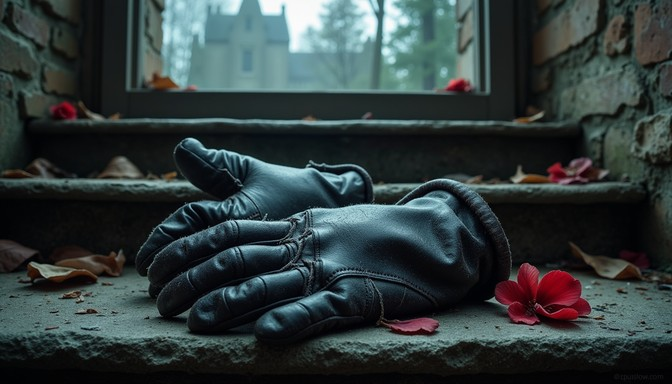

🔑 Evidence #01 — Missing Key
A small brass key was discovered underneath the study desk.
Nobody admits owning it.
🍷 Evidence #02 — Wine Glass
Richard's fingerprints were found on the glass.
But another person's fingerprints were partially detected.
Unknown fingerprint.

⏰ Evidence #03 — Broken Clock
The clock stopped at:
11:37 PM
But investigators aren't sure whether this represents the actual time of the murder.
📱 Evidence #04 — Missing Phone
Richard's phone disappeared from the crime scene.
It was later discovered hidden inside the library.

🪟 Evidence #05 — Open Window
The study window was open.
There were muddy footprints near it.
But...
the footprints lead INTO the room, not out of it.
👀

🧤 Evidence #06 — Black Glove
One black glove was found underneath the study desk.
Only the left glove.